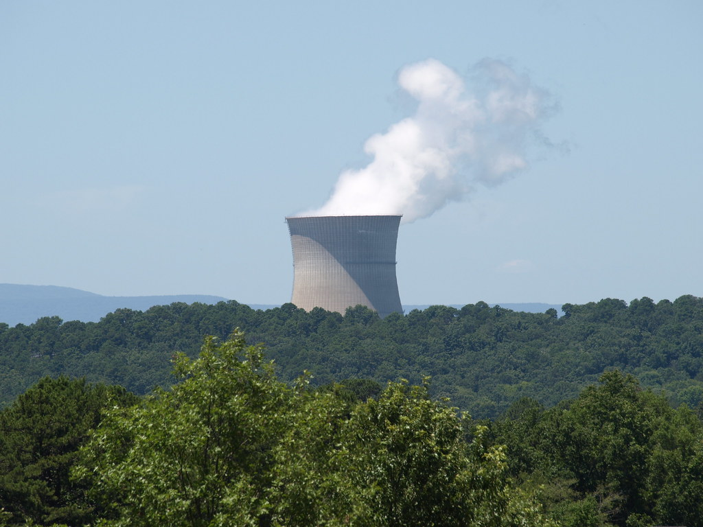

Nuclear
Nuclear energy is one that has great beneifts when everything goes as it should. It preserves air quality by producing carbon-free electricity.Nuclear energy is currently used to power the majority of the United States.
The energy produced is the result of the splitting of microscopic uranium atoms using nuclear fission.
Advantages of nuclear energy:
- Clean energy source
- Creates nearly half a million jobs
- Low enviromental impact
- Reduces fossil fuel conumption
Challenges of Nuclear Energy
- Can be dangerous or unstable
- High startup/operation costs
- Leftover radioactive material
